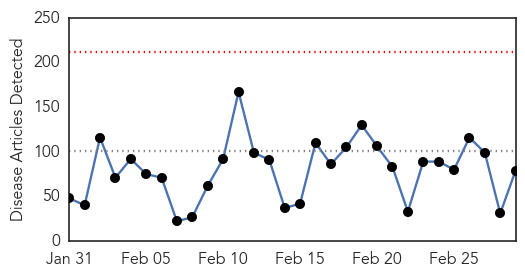
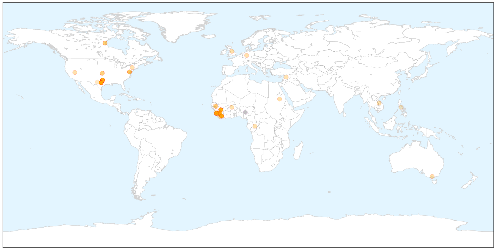

Ebola
30-Day Web Trend
0 alerts, 0 warnings

30-Day Twitter Trend
5 alerts, 4 warnings

Article Locations

X

Article Confidences

Top Articles:
- 1.000
- Prescription for avoiding Ebola airport screening: ibuprofen
- 1.000
- Sierra Leone Vice President Sumana in quarantine after guard dies of Ebola; is top most leader to do so
- 1.000
- Ebola Quarantines Vice President of Sierra Leone
- 0.999
- Sierra Leone vice president in Ebola quarantine
- 0.999
- Ebola ebbs but aid agencies warn against complacency
- 0.999
- Sierra Leone vice president in Ebola quarantine
- 0.998
- Sierra Leone veep in Ebola quarantine
- 0.998
- Sierra Leone's vice-president in quarantine for Ebola
- 0.998
- Ebola Aftermath
- 0.998
- Sierra Leone’s VP in self-quarantine after guard dies from Ebola - National
- 0.997
- At cusp of zero cases, Ebola returned by sea
- 0.997
- Sierra Leone's VP in quarantine over Ebola concern
- 0.997
- Sierra Leone's three-day Ebola shutdown ends
- 0.997
- Viruses like Ebola are mutating and that has scientists concerned
- 0.997
- Ebola in Sierra Leone: Vice-president in self-quarantine after guard dies
- 0.996
- Sierra Leone's Vice President in Quarantine for Ebola
- 0.995
- Sierra Leone VP in Ebola quarantine
- 0.995
- Sierra Leone's vice president in quarantine for Ebola
- 0.992
- Sierra Leone orphanage quarantined
- 0.991
- Sierra Leone's vice president in quarantine for Ebola
- 0.991
- Aust nurse under observation for Ebola
- 0.991
- Ebola outbreak: Sierra Leone vice-president quarantined
- 0.990
- Nurse who contracted Ebola to sue Texas hospital
- 0.990
- Senegal: Senegal: Ebola Virus Disease outbreak, Emergency Appeal n MDRSN010 - Operations update n 14
- 0.989
- US Ebola nurse says hospital 'failed her'
- 0.988
- Newspaper: Nurse who survived Ebola says hospital failed her
- 0.987
- Nurse who survived Ebola says Texas hospital failed her
- 0.987
- Criticism grows as Sierra Leone's Ebola shutdown enters final day
- 0.986
- Nurse who survived Ebola says hospital failed her
- 0.986
- Nina Pham, nurse who survived Ebola, plans to sue the hospital that 'failed her'
- 0.984
- Sierra Leone VP under self-imposed 21 day Ebola quarantine
- 0.983
- Sierra Leone vice-president under Ebola quarantine
- 0.983
- Newspaper: Nurse who survived Ebola says hospital failed her
- 0.981
- Nurse Nina Pham suing hospital where she contracted Ebola
- 0.980
- New Ebola Treatment ZMapp Is Ready For Human Clinical Trials
- 0.979
- Reuters Health News Summary
- 0.978
- Senegal: Ebola Virus Disease outbreak, Emergency Appeal n° MDRSN010 - Operations update n° 14 - Senegal
- 0.977
- Obama to meet Liberian president on Ebola
- 0.977
- SLeone vice president in Ebola quarantine asks country to pray
- 0.974
- Sierra Leone vice president in Ebola quarantine
- 0.972
- Asian herb derivative can work against Ebola
- 0.968
- Sierra Leone vice president in Ebola quarantine
- 0.967
- Dead Que. man tests negative for Ebola
- 0.965
- Texas Ebola nurse says hospital failed her and her colleagues
- 0.964
- Two children tested for Ebola
- 0.963
- West Aussies join ‘Florence Nightingale’ of Ebola crisis
- 0.961
- "Ebola Nurse" Nina Pham Will Sue Employer
- 0.958
- Ebola nurse to sue Dallas hospital parent company over training, privacy concerns
- 0.955
- Former Ebola Patient Nina Pham to File Lawsuit Against Texas Health Resources : Off-Key : Music Times
- 0.954
- Nurse Who Survived Ebola Plans To Sue Dallas Hospital
Showing top 50 articles...
Top Tweets:
- 0.770
- Ebola Survivor Nina Pham to Sue Texas Health Resources - NBC 5 Dallas-Fort Worth http://t.co/uY02g08plC ebola EVD
- 0.770
- Ebola Survivor Nina Pham to Sue Texas Health Resources - NBC 5 Dallas-Fort Worth http://t.co/k7jlq5E0jb ebola EVD
- 0.721
- Nearly Halted in Sierra Leone Ebola Makes Comeback by Sea - New York Times http://t.co/pKnUSBgshX ebola EVD
- 0.721
- Nearly Halted in Sierra Leone Ebola Makes Comeback by Sea - New York Times http://t.co/BW1cjqPdHO ebola EVD
- 0.713
- [BBC] Ebola outbreak: Sierra Leone vice-president quarantined http://t.co/xIZ6zFADSJ EBOLANEWS
- 0.643
- Nina Pham's dog Bentley made it through Ebola crisis; President Obama takes ... - Dallas Morning News http://t.co/llSHtQDBg0 ebola EVD
- 0.611
- A Gendered Lens on the Current Ebola Epidemic in West Africa http://t.co/OODjww8WIJ
- 0.588
- Nurse Who Survived Ebola Says Hospital Failed Her - ABC News http://t.co/Gf4eZufBpG ebola EVD